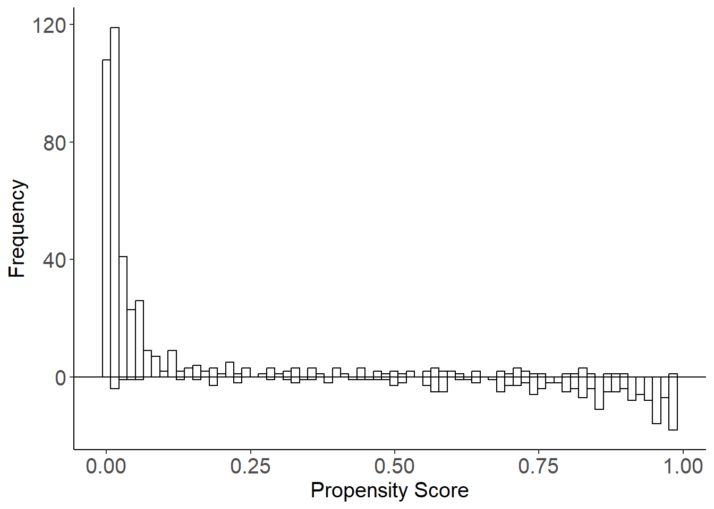
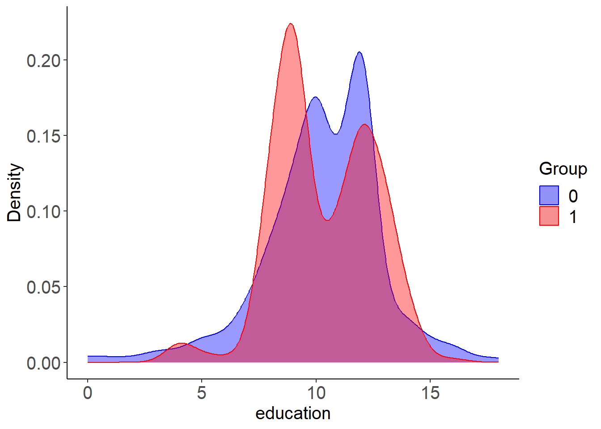
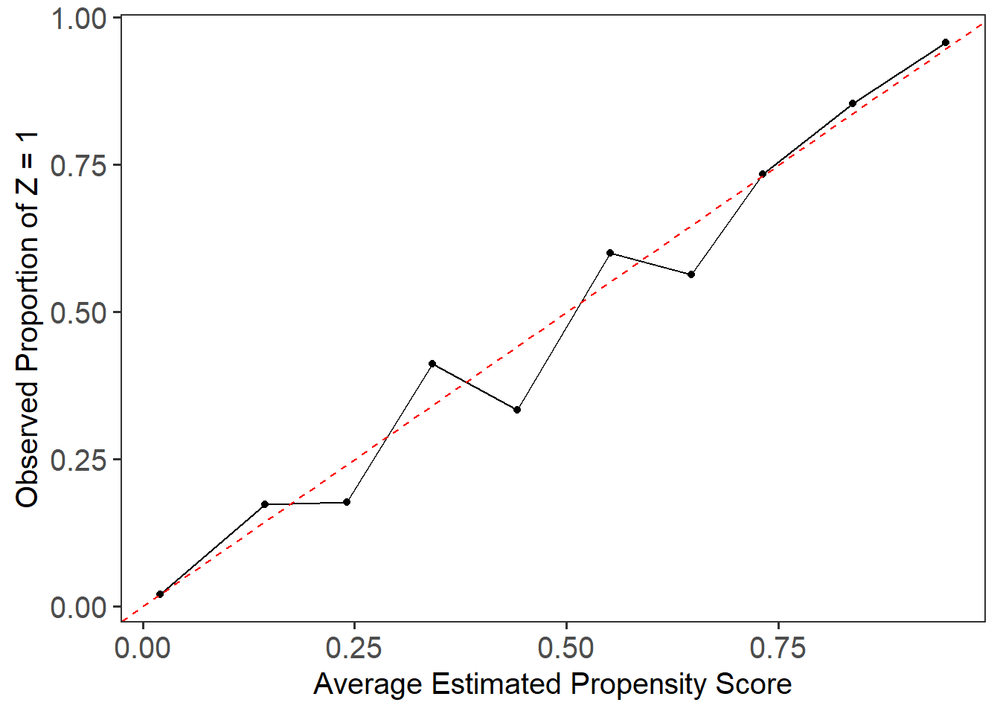
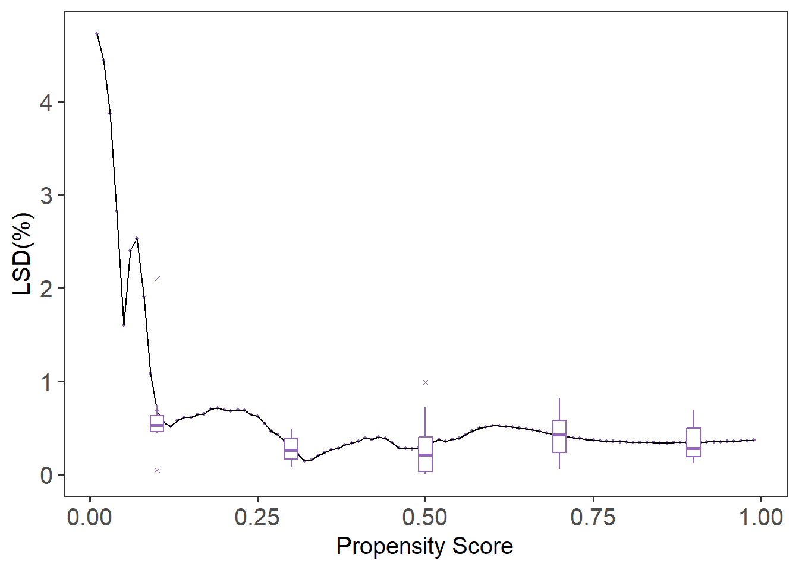
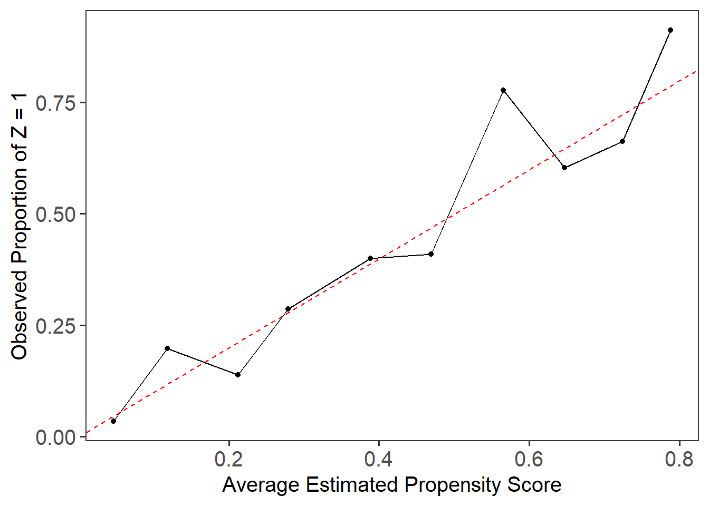
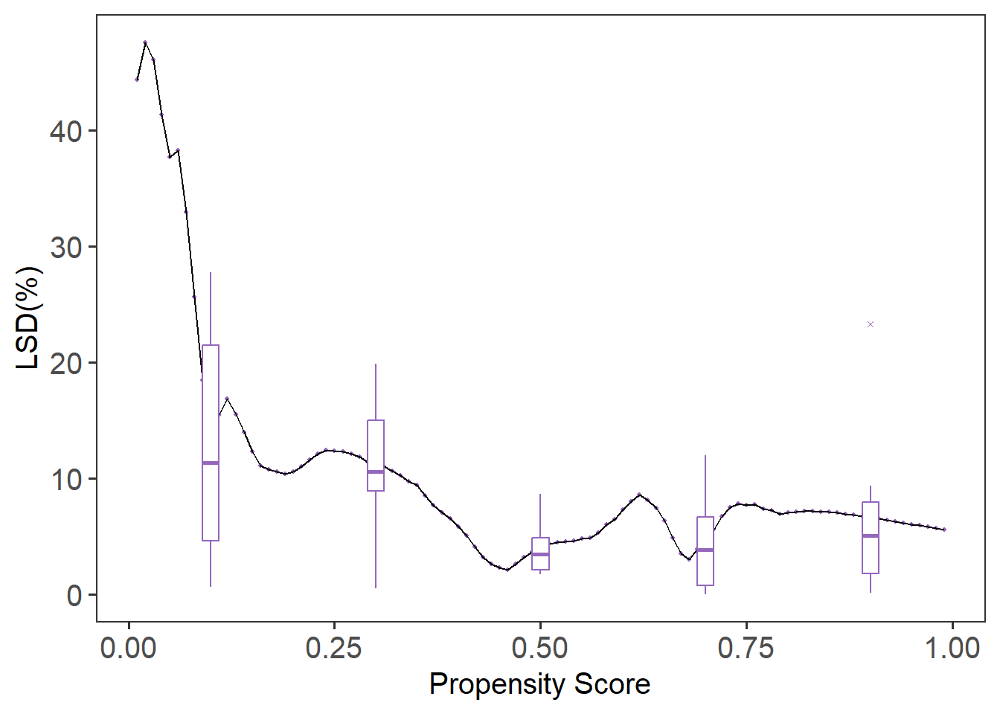

library(LBCNet)
# Automatically creates and sets up "r-lbcnet" virtual environment
setup_lbcnet(create_if_missing = TRUE)Tutorial for LBCNet pacakge
Introduction
Welcome to the LBCNet tutorial! This guide provides a detailed introduction to the LBCNet package and demonstrates its use in causal inference analyses. LBCNet stands for Local Balance with Calibration implemented by Neural Networks. The package offers a set of tools for estimating propensity scores in a nonparametric way, using neural networks, and for evaluating the quality of these estimates through intuitive diagnostics and visualizations.
LBCNet has two main objectives. First, it aims to provide accurate propensity score estimation to support causal effect estimation, including the average treatment effect (ATE) and the average treatment effect on the treated (ATT). Second, it offers diagnostic tools to assess the quality of the estimated propensity scores. These diagnostics include evaluations of the propensity score distributions, covariate distributions, and checks for local balance and local calibration. To aid interpretation, LBCNet also provides several visualization tools, such as mirror histograms, calibration plots, and local balance plots.
Propensity score methods have become a cornerstone in addressing confounding in observational studies. The concept of propensity scores was introduced by Rosenbaum and Rubin (1983) as the probability of treatment assignment conditional on a set of observed covariates. Under the strong ignorability assumption, adjusting for the propensity score allows for unbiased estimation of treatment effects. A key property of the propensity score is its balancing property, which ensures that, given the propensity score, the distribution of covariates is similar between treatment and control groups. Proper estimation of propensity scores helps reduce covariate imbalance, which is a primary source of bias in causal inference.
LBCNet addresses the critical importance of covariate balance by introducing two fundamental conditions: local balance and local calibration. Local balance ensures that covariates are balanced across a dense grid of propensity scores, while local calibration guarantees that the balancing scores correspond to true propensity scores. To achieve these goals, LBCNet leverages neural networks, which are capable of capturing complex, nonlinear relationships between covariates. Neural networks are particularly suitable for this task due to their flexibility, ability to model high-dimensional data, and efficiency through parallel processing.
This tutorial walks you through the process of setting up LBCNet, including options for using system Python and virtual environments via the reticulate package. It then demonstrates a complete analysis on a public lalonde data set from sbw package (Zubizarreta, 2024), with detailed instructions on how to choose parameters, interpret diagnostic results, and evaluate balance. The tutorial also provides guidance on achieving optimal balance and reliable causal estimates, along with notes on function arguments and practical tips for users.
Support for multiple treatment groups is currently under development and will be included in a future release of the package.
Setup: Configuring Python for LBCNet
Before using LBC-Net, you need to configure a Python environment. This environment runs the neural network model behind LBC-Net’s nonparametric propensity score estimation. The package uses the reticulate package to manage Python environments and packages from within R. The key function for managing this setup is setup_lbcnet().
setup_lbcnet() configures the Python environment required by LBC-Net. It checks for Python availability, ensures necessary Python packages (e.g., Torch) are installed, and manages virtual environments. You can call setup_lbcnet() directly before running lbc_net(), or let lbc_net() call it automatically during model fitting by passing arguments through setup_lbcnet_args.
How it works:
- If Python has not been configured,
setup_lbcnet()will Automatically create a virtual environment named “r-lbcnet” by default (ifcreate_if_missing = TRUE). And install the required Python packages. - If you already have a virtual environment or want to use system Python, you can customize how LBC-Net connects to Python.
Option 1: Virtual Environment (Recommended)
This is the default and safest setup, creating a dedicated Python environment for LBCNet. If you have not set up reticulate before, simply run:
This will create a virtual environment named “r-lbcnet” if it doesn’t exist and install all necessary Python packages (TensorFlow, etc.). Then it activates and uses the virtual environment.
If you want to manually create and control the virtual environment, you can do:
library(reticulate)
# Create the virtual environment (only run once)
virtualenv_create("r-lbcnet")
# Activate the virtual environment in your R session
use_virtualenv("r-lbcnet", required = TRUE)Once this is done, lbc_net() will automatically detect and use the environment “r-lbcnet”. If you have multiple virtual environments, specify the environment explicitly via setup_lbcnet(envname = "r-lbcnet"). In addition, you can also pass the environment name when calling lbc_net() by using the setup_lbcnet_args argument:
lbc_net(
data = mydata,
formula = Tr ~ X1 + X2 + X3,
setup_lbcnet_args = list(envname = "r-lbcnet")
)Option 2: System Python
If you prefer to use an existing system Python installation instead of virtualenv or Conda, you can specify use_system_python = TRUE and point to your Python executable. You can use the following code to find the available Python executables on your system:
library(LBCNet)
# Discover available Python environments
available_pythons <- unique(c(
Sys.which("python"),
Sys.which("python3"),
reticulate::py_discover_config()$python
))
# Clean up and display results
available_pythons <- available_pythons[nzchar(available_pythons)]
print(available_pythons)Note: Sys.which() returns only the first Python executable found on your system. If this does not match the Python path you want to use, you should specify the correct path manually. If you have a specific Python executable path you want to use, do this:
path <- "C:/Users/mpeng1/AppData/Local/Programs/Python/Python311/python.exe" ## change it to your path
# Set up LBCNet to use system Python
setup_lbcnet(use_system_python = TRUE, system_python_path = path)Alternatively, you can specify it when calling lbc_net():
lbc_net(
data = mydata,
formula = Tr ~ X1 + X2 + X3,
setup_lbcnet_args = list(
use_system_python = TRUE,
system_python_path = "C:/Users/mpeng1/AppData/Local/Programs/Python/Python311/python.exe"
)
)Option 3: Conda Environment
If you prefer Conda environments, you can specify use_conda = TRUE in setup_lbcnet() and lbc_net() to manage environments through Conda instead of virtualenv. For more details on Conda environments in R, refer to the official Reticulate Documentation.
If you encounter issues, try reticulate::py_discover_config() to see which Python environment is active.
Implementing LBC-Net on the lalonde Dataset (ATE Estimation)
The dataset originates from the National Supported Work (NSW) Demonstration, an experimental program designed to evaluate the impact of employment training on future earnings. The treatment assignment indicator (treatment) specifies whether an individual received the job training (1 = treated, 0 = control). The dataset includes pre-treatment covariates: age (in years), education (years of schooling), black (1 if Black, 0 otherwise), hispanic (1 if Hispanic, 0 otherwise), married (1 if married, 0 otherwise), nodegree (1 if the individual has no high school diploma), re74 (real earnings in 1974), and re75 (real earnings in 1975). The outcome variable is re78, which records real earnings in 1978. The Lalonde dataset includes 614 observations, consisting of 185 treated and 429 control subjects, with a total of 10 variables.
In this example, we use the lbc_net() function to estimate propensity scores for the binary treatment based on the pre-treatment covariates listed above. We run lbc_net() with its default parameters and provide an explanation of key options that users may want to modify depending on their analysis.
First, we fit the LBC-Net model to estimate the propensity score for receiving abciximab treatment. We use the covariates as predictors in the formula.
library(sbw)
data("lalonde")
library(LBCNet)
lbc_net.fit <- lbc_net(
data = lalonde,
formula = treatment ~ age + education + black + hispanic + married + nodegree + re74 + re75,
max_epochs = 15000,
rho = 0.4
)⚠️ Stopping criterion not met at max epochs. Try increasing `max_epochs` or adjusting `lsd_threshold` for better convergence.
✅ LBC-Net training completed successfully.Here, we adjust the lbc_net() parameters to account for the small sample size and limited overlap observed in the Lalonde dataset. The mirror histogram from mirror_hist() shows poor overlap between treated and control groups, making balance harder to achieve. To address this, we increase the training iterations to 15,000 epochs (max_epochs = 15000) and expand the local neighborhood size to 40% of the sample (rho = 0.4). These adjustments give the model more time to optimize and ensure sufficient data points within each local region to improve balance.
After fitting the LBC-Net model using lbc_net(), the next step is to evaluate its performance and the quality of the estimated propensity scores.
The print() function provides a quick summary of the training process, including the training loss, local balance metrics, and other key indicators. For detailed results, such as causal effect estimates and covariate balance summaries, use the summary() function.
In this example, we use summary() to obtain estimates of the ATE on six-month survival. Since the outcome variable is not specified by default, we pass it explicitly as the argument Y. In this case, the outcome is binary (survival status), but we continue to compute the ATE. For survival outcomes with time-to-event data, you can alternatively apply a weighted Cox proportional hazards model using the propensity score weights from LBCNet.
summary(lbc_net.fit, Y = lalonde$re78)Call:
treatment ~ age + education + black + hispanic + married + nodegree + re74 + re75
Sample Size: 614 | Number of Covariates: 8
Treated: 185 | Control: 429
--- Losses ---
Balance Loss: 0.0158
Calibration Loss: 0.7658
Total Loss: 0.7815
--- Local Balance (LSD) % ---
Max LSD: 9.0997
Mean LSD: 0.6369
--- Global Standardized Differences (GSD) % ---
Covariate Pre-GSD Post-GSD
---------------------------------------
age -22.5450 -1.2933
education 4.2090 0.9827
black 163.8478 0.7593
hispanic -25.8951 -0.3112
married -68.8767 -2.6840
nodegree 23.2018 1.0334
re74 -56.2210 -2.1712
re75 -28.6199 -2.0824
--- Treatment Effect Estimate ---
ATE: -88.2016By default, summary() computes the ATE using the inverse probability of treatment weights (IPTW) derived from the estimated propensity scores. If you are working with survival outcomes (time-to-event data), you can use a weighted Cox proportional hazards model by applying the weights coxph(Surv(time, event) ~ abcix, data = lindner, weights = lbc_net.fit$weights).
The summary() output also includes a covariate balance table, which reports the standardized mean differences before and after weighting, and a global balance metric, the Global Standardized Difference (GSD). The GSD summarizes the overall covariate imbalance across all variables, expressed as a percentage. You can extract these tables from the summary output using summary_out$balance_table (a data frame) and summary_out$gsd.
To evaluate the performance of LBC-Net relative to traditional methods, we can compare its global balance (GSD) with that obtained from logistic regression propensity scores. Below is an example of how to fit a logistic regression model, extract the predicted propensity scores, and compute the GSD using the gsd() function.
log.fit <- glm(
treatment ~ age + education + black + hispanic + married + nodegree + re74 + re75,
data = lalonde,
family = binomial()
)
ps_log <- log.fit$fitted.values
Tr <- lalonde$treatment
Z <- lalonde[, c("age", "education", "black", "hispanic", "married", "nodegree", "re74", "re75")]
## Compute GSD
gsd_log <- gsd(
Z = Z,
Tr = Tr,
ps = ps_log
)
gsd_log age education black hispanic married nodegree re74
-14.947443 12.094698 10.175575 1.447039 -19.351822 -11.262428 -25.978241
re75
-16.354046 ## Calculate ATE
wt_log <- 1/(ps_log*Tr+(1-Tr)*(1-ps_log))
est_effect(Y = lalonde$re78, Tr = Tr, wt = wt_log)[1] 224.6763Evaluating the Estimated Propensity Scores
After fitting the LBC-Net model and obtaining propensity scores, the next step is to evaluate how well these scores satisfy the key assumptions required for causal inference, such as overlap and covariate balance. This section demonstrates how to use LBC-Net’s diagnostic plots to assess the quality of the estimated scores.
The mirror histogram shows the distribution of propensity scores for treated and control groups. It helps assess the overlap (common support) assumption, which is critical for valid causal comparisons. You can generate this plot directly from the fitted lbc_net object as follows:
mirror_hist(lbc_net.fit)
While the sample size is relatively small, there is reasonable overlap between groups across much of the propensity score range. In larger datasets, this overlap may be even clearer, but the current plot suggests the assumption is adequately met.
The mirror_hist() function can also be used with any set of propensity scores by specifying ps and Tr. For example, with propensity scores from a logistic regression model mirror_hist(ps = ps_log, Tr = Tr).
The plot_cov_bal() function shows the distribution of a specific covariate in the treated and control groups, both before and after weighting. This allows you to visually assess whether LBC-Net has improved covariate balance after applying weights. In this example, we examine the balance of the covariate height:
plot_cov_bal(lbc_net.fit, cov = "education", use_weights = TRUE)
By default, the plot displays the weighted distribution using kernel density estimation. If you prefer to view the unweighted distribution, you can set use_weights = FALSE. Additionally, you can display the distribution as histograms instead of density plots by using plot_type = "hist".
Local Calibration and Local Balance
After fitting the LBC-Net model, it is important to evaluate whether the estimated propensity scores satisfy key theoretical properties: calibration and covariate balance. These evaluations help assess the quality of the propensity score model and its ability to support valid causal inference.
The local calibration check assesses whether the estimated propensity scores accurately reflect the probability of treatment assignment. We use the plot_calib() function to visualize calibration. A well-calibrated model will have its fitted line closely follow the 45-degree line, indicating that predicted probabilities match observed treatment rates across the score range.
plot_calib(lbc_net.fit)
In this case, due to the small sample size and limited overlap in the Lalonde dataset, we observe some deviation from the 45-degree line, particularly in the middle range of the propensity scores. This suggests that while LBCNet performs reasonably well, achieving perfect calibration in smaller samples with poor overlap remains challenging.
The local balance check evaluates whether covariates are balanced between treatment groups across the range of propensity scores. We use the lsd() function to calculate the Local Standardized Differences (LSD) and summarize them across covariates.
lsd.fit <- lsd(lbc_net.fit)
summary(lsd.fit)Call:
function (x, ...) UseMethod("formula")
Sample Size: 614 | Number of Covariates: 8
Treated: 185 | Control: 429
Estimand: ATE (Average Treatment Effect)
--- Local Balance (LSD) % ---
Max LSD: 9.0997
Mean LSD: 0.6369
Covariates LSD %
--------------------
age 0.9588
education 0.3853
black 0.6747
hispanic 0.2941
married 0.7915
nodegree 0.4263
re74 0.8330
re75 0.7317 plot(lsd.fit)
The summary(lsd.fit) function provides the mean LSD for each covariate, while plot(lsd.fit) visualizes local balance across the entire score range. The default plot shows boxplots summarizing the variation in local balance across all covariates (cov = “all”). To focus on a specific covariate, such as age, you can specify it directly with cov = "age". If you prefer to remove the boxplots and focus on the local balance curves, you can suppress them by setting box.loc = NULL. In this example, LBCNet maintains local standardized differences generally under \(5\%\) across the full range of propensity scores, suggesting good local balance.
For comparison, we can evaluate the local balance and calibration of propensity scores estimated from a traditional logistic regression model.
plot_calib(Tr = Tr, ps = ps_log)
lsd.fit.log <- lsd(Z = Z, Tr = Tr, ps = ps_log)
summary(lsd.fit.log)Call:
function (x, ...) UseMethod("formula")
Sample Size: 614 | Number of Covariates: 8
Treated: 185 | Control: 429
Estimand: ATE (Average Treatment Effect)
--- Local Balance (LSD) % ---
Max LSD: 77.7346
Mean LSD: 10.2577
Covariates LSD %
--------------------
age 16.3696
education 9.0942
black 6.0572
hispanic 2.9699
married 13.7013
nodegree 12.7773
re74 11.7533
re75 9.3384 plot(lsd.fit.log)
Compared to LBC-Net, logistic regression shows larger global and local imbalance, with higher LSD values and more severe deviations in the calibration plot. These results highlight the advantage of LBC-Net in achieving better local balance and calibration, particularly in datasets with challenging overlap and sample size conditions.
Reference
Rosenbaum, P. R. and Rubin, D. B. (1983). The central role of the propensity score in observational studies for causal effects. Biometrika, 70(1):41–55.
Zubizarreta J, Li Y, Kim K (2024). sbw: Stable Balancing Weights for Causal Inference and Missing Data. R package version 1.1.9, https://CRAN.R-project.org/package=sbw.
Contribute and Feedback
We welcome contributions, feedback, and suggestions!
- Report bugs or request features on our GitHub Issues page.
- Fork the repository and submit pull requests to help improve LBCNet!